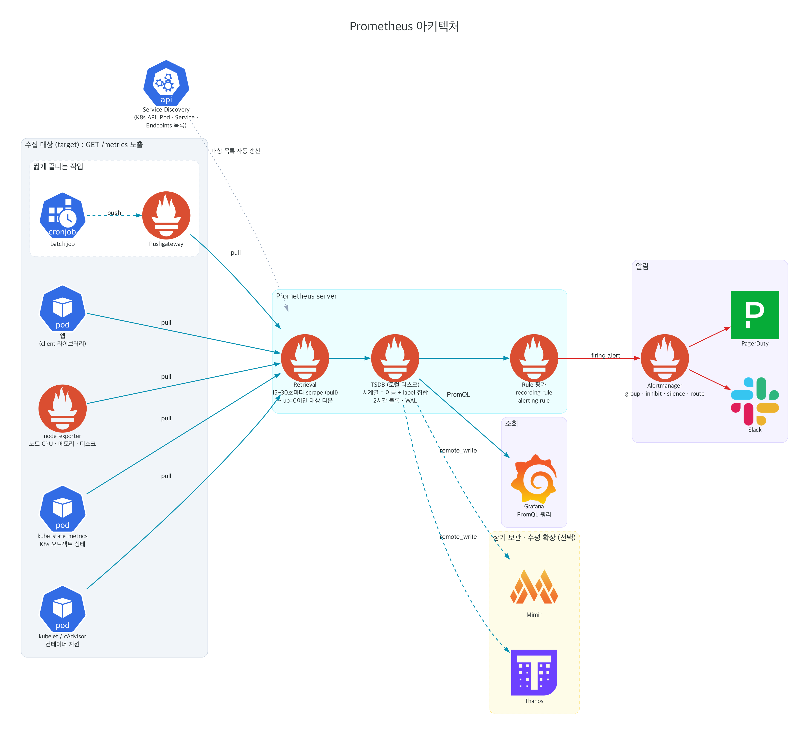

Observability · 1주차 · 애니메이션 슬라이드
OpenTelemetry 동작 원리
신호 생성 → 전파 → 샘플링·집계·수집 → Prometheus 조회까지. 알고리즘은 재생·되감기·단계 이동 가능한 애니메이션으로.
← → 또는 스와이프로 이동 · Space 재생/정지 · 진행 바의 테두리 칸 = 애니메이션 슬라이드
배경
밖에서 안을 들여다봐야 하는 이유
- 모놀리스: 서버 한 대 접속 → 로그·프로세스 확인하면 끝
- 클라우드 네이티브: 요청 하나가 수십 개 서비스 경유, 파드는 수시로 생성·삭제. 장애 난 파드가 이미 없을 수도 있음
- 시스템이 스스로 상태를 텔레메트리로 내보내고, 밖에서 그것만으로 내부 추론 → 관측 가능성(observability)
- 걸림돌: 벤더마다 다른 SDK·에이전트·포맷. 2019년 OpenTracing + OpenCensus → OpenTelemetry로 통합

OpenTelemetry란
텔레메트리 생성·전송 표준. 저장·조회는 범위 밖
API·SDK·데이터 포맷(OTLP)·Collector·시맨틱 컨벤션을 벤더 중립으로 정의. Jaeger·Prometheus 같은 백엔드의 대체재 아님.
Traces요청 하나가 서비스를 지나간 경로. span 트리
Metrics시간 단위로 집계한 숫자. 대시보드·알람의 기반
Logs타임스탬프 붙은 레코드. 기존 로깅 라이브러리를 브리지
Baggage서비스 간 전파되는 key-value. 다른 신호에 맥락 추가
Profiles스택 샘플링 기반 CPU·메모리 사용 분포 (개발 중)
신호 간 연결 고리: Resource(service.name, k8s.pod.name …) + trace_id·span_id
구성 요소
API → SDK → Exporter → OTLP → Collector → 백엔드
- API: Tracer·Meter·Logger 인터페이스. SDK 없으면 no-op → 라이브러리가 부담 없이 의존
- SDK: 샘플링, 배치, 집계, Resource 부착 등 실제 처리 담당
- Exporter: OTLP(gRPC 4317 / HTTP 4318) 등으로 전송
- Collector: receiver → processor → exporter 파이프라인. 앱과 백엔드 사이의 완충·가공 지점
- 계측: 라이브러리 호출을 가로채는 제로 코드 계측 + 직접 span·metric을 넣는 코드 기반 계측 병행

Traces
Trace = span 트리, span = 작업 하나
| 필드 | 의미 |
|---|---|
trace_id | 16바이트. 요청 전체가 공유 |
span_id / parent_span_id | 8바이트. 부모 관계로 트리 구성. 루트 span은 부모 없음 |
name, 시작·종료 시각 | GET /checkout처럼 카디널리티 낮은 이름 |
attributes | 시맨틱 컨벤션 key-value (http.request.method, db.system …) |
events / links | span 안의 시점 사건(예외) / 다른 트레이스와의 인과 관계(배치, 메시지 큐) |
status | Unset · Ok · Error |
kind | SERVER · CLIENT · PRODUCER · CONSUMER · INTERNAL |
애니메이션 · Context Propagation
trace_id는 HTTP 헤더를 타고 다음 서비스로
W3C Trace Context · Baggage
traceparent 헤더 한 줄의 구성
traceparent: 00-4bf92f3577b34da6a3ce929d0e0e4736-00f067aa0ba902b7-01
| 부분 | 길이 | 의미 |
|---|---|---|
| version | 2 hex | 현재 00 |
| trace-id | 32 hex | 트레이스 전체 식별자. 전 구간 동일 |
| parent-id | 16 hex | 보낸 쪽의 현재 span_id → 받는 쪽 span의 부모. 홉마다 변경 |
| trace-flags | 2 hex | 01 = sampled. 하위 서비스가 기록 여부를 그대로 따름 |
baggage: tenant.id=acme,user.tier=premium
Baggage: 같은 경로로 전파되지만 span·metric 속성으로 자동 복사 X. 외부 호출에도 실리므로 토큰·개인정보 금지
애니메이션 · SDK 내부
BatchSpanProcessor: 모아서 한 번에 전송
Sampling
언제 버릴지 정하는 두 방식
| Head sampling | Tail sampling | |
|---|---|---|
| 결정 시점 | 루트 span 시작 시 (SDK) | 트레이스 종료 후 (Collector) |
| 판단 근거 | trace_id 값, 부모 플래그 | 에러 여부, 지연 시간, 속성 등 트레이스 전체 |
| 비용 | 버릴 span은 생성·전송 자체를 안 함 | 모든 span을 일단 받아 메모리에 보관 |
| 약점 | 에러 트레이스도 같은 확률로 버림 | 한 트레이스의 span이 같은 Collector로 모여야 함 |
| 설정 | OTEL_TRACES_SAMPLER=parentbased_traceidratio | tail_sampling processor + loadbalancing exporter |
애니메이션 · TraceIdRatioBased + ParentBased
trace_id 자체가 주사위
애니메이션 · Collector tail_sampling
끝까지 보고 나서 남길 트레이스 선택
Metrics
Instrument로 측정, Aggregation으로 압축
| Instrument | 기본 집계 | 예 |
|---|---|---|
| Counter | Sum (단조 증가) | 요청 수 |
| UpDownCounter | Sum | 활성 연결 수 |
| Histogram | Explicit bucket | 지연 시간 |
| Gauge | Last value | 온도 |
| Observable* | 수집 시 callback | 메모리 사용량 |
- 측정은 즉시, 전송은 주기적: 값은 SDK 메모리의 집계 상태만 갱신, MetricReader가 주기(기본 60s)마다 수거
- Temporality: Cumulative = 시작부터 누적(Prometheus) / Delta = 직전 수집 이후 증가분
- View: SDK 단계에서 버킷 경계·남길 attribute·집계 방식 변경
- Exemplar: 측정 순간 활성 span의 trace_id를 샘플로 부착 → 메트릭에서 트레이스로 이동
애니메이션 · Aggregation · Temporality · Exemplar
측정값 하나가 버킷 카운트가 되기까지
애니메이션 · Cardinality
attribute 하나 = 시계열 수 곱셈
Logs
로그는 새로 안 만들고 기존 로거에 연결
수집 경로 두 가지
앱 로거 (logging, Logback)→Log Bridge→SDK→OTLP
stdout / 파일→Collector filelog receiver→파싱·변환
lab은 두 경로 모두 사용 (agent DaemonSet의 filelog 포함)
- LogRecord: Timestamp, ObservedTimestamp, SeverityNumber(1~24), Body, Attributes, Resource
- TraceId·SpanId: 활성 span 안에서 찍히면 SDK가 자동 기록. 로그 ↔ 트레이스 연결의 핵심 (컨텍스트 전파 애니메이션의 에러 로그 장면)
- Events:
event.name속성을 가진 LogRecord. 별도 신호 아님
애니메이션 · Profiles
스택 주기 샘플링 → 합산 → flame graph
애니메이션 · OpenTelemetry Collector
receiver → processor → exporter, 신호별 파이프라인
Kubernetes 배포
노드마다 agent, 클러스터에 gateway
- agent (DaemonSet): 같은 노드 앱의 OTLP 수신처. 노드 로그 파일(filelog)·kubelet 메트릭도 여기서 수집
- gateway (Deployment): 클러스터 단위 처리. tail sampling·인증·백엔드별 라우팅 집중
- k8s_attributes: 송신 파드 IP로 k8s API 조회 →
k8s.pod.name,k8s.namespace.name등 Resource에 추가 - Operator:
InstrumentationCR + 파드 annotation → 제로 코드 계측 자동 주입

Prometheus
당겨 오는(pull) 시계열 데이터베이스
- scrape: 대상의
/metrics를 주기적으로 GET. 대상 목록은 service discovery(k8s API 등)가 관리 - TSDB: 메트릭 이름 + label 집합 1개 = 시계열 1개. 2시간 단위 블록, WAL로 내구성 확보
- PromQL:
rate(),histogram_quantile()등 조회 시점 계산 - Alertmanager: 발화한 알람의 그룹핑·억제·라우팅
- OTel 연결 지점: Collector
prometheusremotewriteexporter, 또는 Prometheus OTLP 수신 경로/api/v1/otlp

애니메이션 · Scrape · Service Discovery · up
주기적으로 묻고, 응답 없음도 기록
애니메이션 · PromQL rate()
Counter는 기울기로 해석, 재시작은 보정
애니메이션 · PromQL histogram_quantile()
p95 = 버킷 안 선형 보간 추정값
lab 실측 · kind-observability
메트릭 → 트레이스 → 로그, 실제로 따라가기
- Metrics (Prometheus): 세 서비스 모두 에러 비율 약 6.8%. p95는 gateway 0.25s, order 0.227s, payment 0.148s
- Exemplar: payment 히스토그램 버킷의 샘플
trace_id=be6b98dd935c84623faea3d39b4b9ccb,span_id=318c46784283face - Trace (Tempo): 같은 trace_id → gateway → order → payment 트리. 에러 시작점은 payment
POST /pay - Logs (Loki): 같은 trace_id 검색 → payment ERROR 로그
payment gateway timeout, span_id까지 일치
연결 고리: exemplar(메트릭 → 트레이스), LogRecord의 TraceId·SpanId(로그 → 트레이스). 둘 다 컨텍스트 전파 덕분에 같은 값
정리
알고리즘별 조정 손잡이
| 동작 | 위치 | 설정 |
|---|---|---|
| 컨텍스트 전파 | SDK propagator | OTEL_PROPAGATORS=tracecontext,baggage |
| 배치 전송 | BatchSpanProcessor | OTEL_BSP_SCHEDULE_DELAY, OTEL_BSP_MAX_QUEUE_SIZE, OTEL_BSP_MAX_EXPORT_BATCH_SIZE |
| Head sampling | SDK sampler | OTEL_TRACES_SAMPLER, OTEL_TRACES_SAMPLER_ARG |
| Tail sampling | Collector | tail_sampling.decision_wait, policies |
| 메트릭 수집 주기 | PeriodicExportingMetricReader | OTEL_METRIC_EXPORT_INTERVAL |
| 버킷·attribute | View | SDK 코드 또는 Collector transform·filter |
| 메모리 보호 | Collector | memory_limiter.limit_percentage |
| scrape | Prometheus | scrape_interval, *_sd_configs |
| p95 정확도 | 버킷 설계 | SLO 경계 근처에 버킷 경계 배치 |
출처: opentelemetry.io/docs (CC BY 4.0), prometheus.io/docs. 애니메이션의 시간·크기는 보기 쉽게 축소